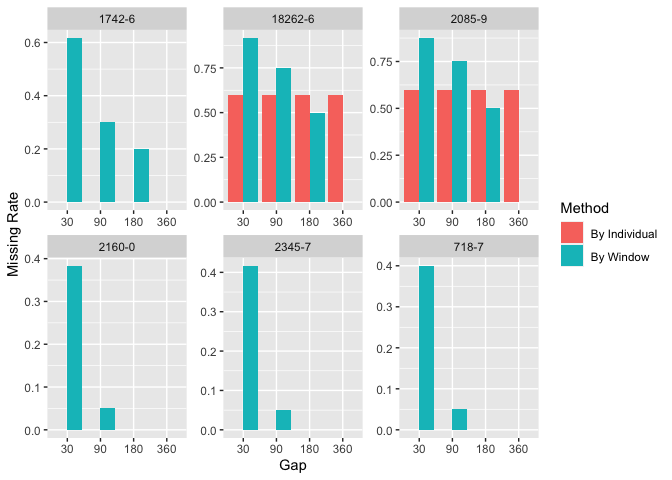
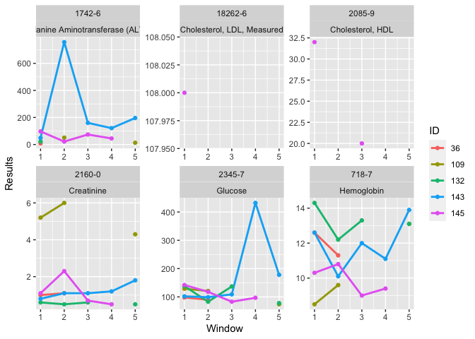

I. Introduction
The proposed open-source lab package is a software tool that help users to explore and process laboratory data in electronic health records (EHRs). With the lab package, researchers can easily map local laboratory codes to the universal standard, mark abnormal results, summarize data using descriptive statistics, impute missing values, and generate analysis ready data.
Feature
- Data Mapping Standardize and manipulate data with Logical Observation Identifiers Names and Codes (LOINC), a common terminology for laboratory and clinical observations.
- Time Series Analysis Separate lab test results into multiple consecutive non-overlapped time windows
- Value Imputation Impute value to replace missing data
- Wide Format Generation Transform longitudinal data into wide format to generate analysis ready data
Development version
# install.packages("devtools") devtools::install_github("DHLab-TSENG/dxpr")

Usage
# install.packages("devtools") devtools::install_github("DHLab-TSENG/lab") library(lab)
Dataset
The sample data includes 1,744 lab records containing 7 different lab items tested by 5 patients from MIMIC-III database.
head(labSample) #> SUBJECT_ID ITEMID CHARTTIME VALUENUM VALUEUOM FLAG #> 1: 36 50811 2131-05-18 12.7 g/dL abnormal #> 2: 36 50912 2131-05-18 1.2 mg/dL #> 3: 36 51222 2131-05-18 11.9 g/dL abnormal #> 4: 36 50912 2131-05-19 1.3 mg/dL abnormal #> 5: 36 50931 2131-05-19 160.0 mg/dL abnormal #> 6: 36 51222 2131-05-19 9.6 g/dL abnormal
I. Data Mapping
If LOINC is not the default terminology, users are recommended to map local lab item with LOINC by providing mapping table.
First, user shall prepare a mapping table with local codes and LOINC codes.
head(mapSample) #> ITEMID LABEL FLUID CATEGORY LOINC #> 1: 50811 Hemoglobin Blood Blood Gas 718-7 #> 2: 50861 Alanine Aminotransferase (ALT) Blood Chemistry 1742-6 #> 3: 50904 Cholesterol, HDL Blood Chemistry 2085-9 #> 4: 50906 Cholesterol, LDL, Measured Blood Chemistry 18262-6 #> 5: 50912 Creatinine Blood Chemistry 2160-0 #> 6: 50931 Glucose Blood Chemistry 2345-7
loincSample <- mapLOINC(labData = labSample, labItemColName = ITEMID, mappingTable = mapSample) head(loincSample) #> ITEMID SUBJECT_ID CHARTTIME VALUENUM VALUEUOM FLAG LABEL #> 1: 50811 36 2131-05-18 12.7 g/dL abnormal Hemoglobin #> 2: 50811 36 2131-05-04 12.3 g/dL abnormal Hemoglobin #> 3: 50811 36 2131-05-15 10.0 g/dL abnormal Hemoglobin #> 4: 50811 36 2131-05-17 11.7 g/dL abnormal Hemoglobin #> 5: 50811 109 2142-02-25 6.9 g/dL abnormal Hemoglobin #> 6: 50811 109 2141-09-20 7.2 g/dL abnormal Hemoglobin #> FLUID CATEGORY LOINC #> 1: Blood Blood Gas 718-7 #> 2: Blood Blood Gas 718-7 #> 3: Blood Blood Gas 718-7 #> 4: Blood Blood Gas 718-7 #> 5: Blood Blood Gas 718-7 #> 6: Blood Blood Gas 718-7
Once a user map lab test codes with LOINC, ranges can be used to mark abnormal results, and related names can be used to search related lab test codes by other common names of a lab test.
loincMarkedSample <- getAbnormalMark(labData = loincSample, idColName = SUBJECT_ID, labItemColName = LOINC, valueColName = VALUENUM, genderColName = GENDER, genderTable = patientSample, referenceTable = refLOINC) head(loincMarkedSample) #> ITEMID ID CHARTTIME Value VALUEUOM FLAG #> 1: 50861 36 2131-04-30 8 IU/L #> 2: 50861 36 2131-05-17 12 IU/L #> 3: 50861 36 2134-05-14 12 IU/L #> 4: 50861 109 2138-07-03 14 IU/L #> 5: 50861 109 2142-03-21 46 IU/L abnormal #> 6: 50861 109 2142-01-09 10 IU/L #> LABEL FLUID CATEGORY LOINC ABMark #> 1: Alanine Aminotransferase (ALT) Blood Chemistry 1742-6 <NA> #> 2: Alanine Aminotransferase (ALT) Blood Chemistry 1742-6 <NA> #> 3: Alanine Aminotransferase (ALT) Blood Chemistry 1742-6 <NA> #> 4: Alanine Aminotransferase (ALT) Blood Chemistry 1742-6 <NA> #> 5: Alanine Aminotransferase (ALT) Blood Chemistry 1742-6 H #> 6: Alanine Aminotransferase (ALT) Blood Chemistry 1742-6 <NA>
caseCreatinine <- searchCasesByLOINC(labData = loincSample, idColName = SUBJECT_ID, loincColName = LOINC, dateColName = CHARTTIME, condition = "Creatinine", isSummary = TRUE) head(loincMarkedSample) #> ITEMID ID CHARTTIME Value VALUEUOM FLAG #> 1: 50861 36 2131-04-30 8 IU/L #> 2: 50861 36 2131-05-17 12 IU/L #> 3: 50861 36 2134-05-14 12 IU/L #> 4: 50861 109 2138-07-03 14 IU/L #> 5: 50861 109 2142-03-21 46 IU/L abnormal #> 6: 50861 109 2142-01-09 10 IU/L #> LABEL FLUID CATEGORY LOINC ABMark #> 1: Alanine Aminotransferase (ALT) Blood Chemistry 1742-6 <NA> #> 2: Alanine Aminotransferase (ALT) Blood Chemistry 1742-6 <NA> #> 3: Alanine Aminotransferase (ALT) Blood Chemistry 1742-6 <NA> #> 4: Alanine Aminotransferase (ALT) Blood Chemistry 1742-6 <NA> #> 5: Alanine Aminotransferase (ALT) Blood Chemistry 1742-6 H #> 6: Alanine Aminotransferase (ALT) Blood Chemistry 1742-6 <NA>
II. Time Series Analysis
lab package allows users to separate lab test results into multiple consecutive non-overlapped time windows. The index date of time windows can be the first or last event occurred for individuals, or a specific date for all patients. To help users find suitable window size (e.g., 30 days or 180 days, to name but a few), a plot function is provided to visualize how frequent the patients did each lab test.
windowProportion <- plotWindowProportion(labData = loincSample, idColName = SUBJECT_ID, labItemColName = LOINC, dateColName = CHARTTIME, indexDate = first, gapDate = c(30, 90, 180, 360), topN = 5) print(windowProportion$graph)

head(windowProportion$missingData) #> LAB Gap Method Proportion #> 1: 1742-6 30 Missing ID 1.0 #> 2: 1742-6 90 Missing ID 0.4 #> 3: 1742-6 180 Missing ID 0.4 #> 4: 1742-6 360 Missing ID 0.4 #> 5: 18262-6 30 Missing ID 0.6 #> 6: 18262-6 90 Missing ID 0.6
After the index date and window size are decided, the descriptive statistics information, including total test times within a window, maximum test value, minimum test value, test values average, and the record nearest to the index date, are shown.
timeSeriesData <- getTimeSeriesLab(labData = loincSample, idColName = SUBJECT_ID, labItemColName = LOINC + CATEGORY, dateColName = CHARTTIME, valueColName = VALUENUM, indexDate = first, gapDate = 30, completeWindows = TRUE) head(timeSeriesData) #> ID LOINC CATEGORY Window Count Max Min Mean Nearest firstRecord #> 1: 36 1742-6 Chemistry 1 2 12 8 10 8 2131-04-30 #> 2: 36 1742-6 Chemistry 2 NA NA NA NA NA <NA> #> 3: 36 1742-6 Chemistry 3 NA NA NA NA NA <NA> #> 4: 36 1742-6 Chemistry 4 NA NA NA NA NA <NA> #> 5: 36 1742-6 Chemistry 5 NA NA NA NA NA <NA> #> 6: 36 1742-6 Chemistry 6 NA NA NA NA NA <NA> #> lastRecode #> 1: 2131-05-17 #> 2: <NA> #> 3: <NA> #> 4: <NA> #> 5: <NA> #> 6: <NA>
Also, a line chart plotting function is available to do long-term follow-up. Visualization is helpful for detecting data trends. Additionally, “L” and “H” will be used as legendary icon if abnormal values are marked.
timeSeriesPlot <- plotTimeSeriesLab(labData = timeSeriesData, idColName = ID, labItemColName = LOINC + CATEGORY, timeMarkColName = Window, valueColName = Nearest, timeStart = 1, timeEnd = 5, abnormalMarkColName = NULL) plot(timeSeriesPlot)

III. Imputation
Imputation function can be executed to replace missing data.
fullTimeSeriesData <- imputeTimeSeriesLab(labData = timeSeriesData, idColName = ID, labItemColName = LOINC + CATEGORY, windowColName = Window, valueColName = Mean & Nearest, impMethod = NOCB) head(fullTimeSeriesData) #> ID LOINC CATEGORY Window Mean Nearest #> 1: 36 1742-6 Chemistry 1 10 8 #> 2: 36 1742-6 Chemistry 2 12 12 #> 3: 36 1742-6 Chemistry 3 12 12 #> 4: 36 1742-6 Chemistry 4 12 12 #> 5: 36 1742-6 Chemistry 5 12 12 #> 6: 36 1742-6 Chemistry 6 12 12
IV. Wide Format Generation
Then, a function be used to transform longitudinal data into wide format to generate analysis ready data.
wideTimeSeriesData <- wideTimeSeriesLab(labData = fullTimeSeriesData, idColName = ID, labItemColName = LOINC + CATEGORY, windowColName = Window, valueColName = Nearest) head(wideTimeSeriesData) #> ID Window 1742-6_Chemistry 18262-6_Chemistry 2085-9_Chemistry #> 1: 36 1 8 NA NA #> 2: 36 2 12 NA NA #> 3: 36 3 12 NA NA #> 4: 36 4 12 NA NA #> 5: 36 5 12 NA NA #> 6: 36 6 12 NA NA #> 2160-0_Chemistry 2345-7_Chemistry 718-7_Blood Gas 718-7_Hematology #> 1: 1.0 98 12.3 12.6 #> 2: 1.1 90 NA 11.3 #> 3: 1.2 116 NA 14.5 #> 4: 1.2 116 NA 14.5 #> 5: 1.2 116 NA 14.5 #> 6: 1.2 116 NA 14.5